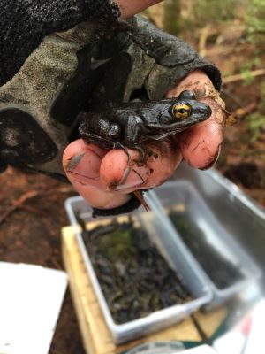

<!-- HTML file for Natalia Hrynko website.
Last modified October 19th, 2020 
3+1 items are 5 added photos, 2 html links, 2 map apis and a table -->-->

<!DOCTYPE html>
<html lang="en">
<head>
<!--  source for tab title: https://www.w3schools.com/tags/tag_title.asp  -->
  <title>NH Contact</title>
<link rel="stylesheet" href="style.css">
  </head>
  
<body>  
<div class="header">
  <h1> Natalia Hrynko</h1>
  </div>
<!-- anchor source: https://flemingcollege.ca/programs/geographic-information-systems-applications-specialist
      nav bar source:  https://www.w3schools.com/css/tryit.asp?filename=trycss_navbar_horizontal_black_right -->

<ul>
 <li><a href="index.html">About</a></li>
  <li><a href="experience.html">Experience</a></li>
  <li><a href="contact.html">Contact</a></li>
</ul>

<h2>
  Contact Information
</h2>

  <h3>Email</h3>
  <p>natalia.hrynko@something.com  </p>
  <h3>Phone Number</h3>
  <p>(123)-456-7899</p>

  
</body>
</html>
